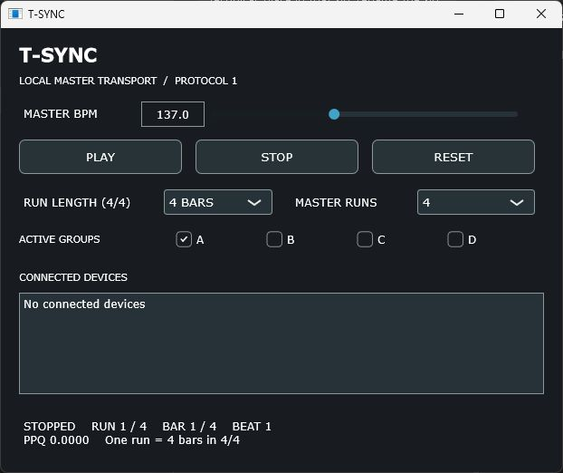
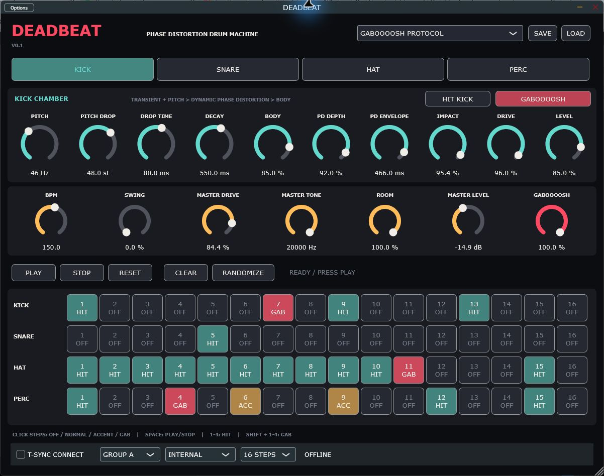
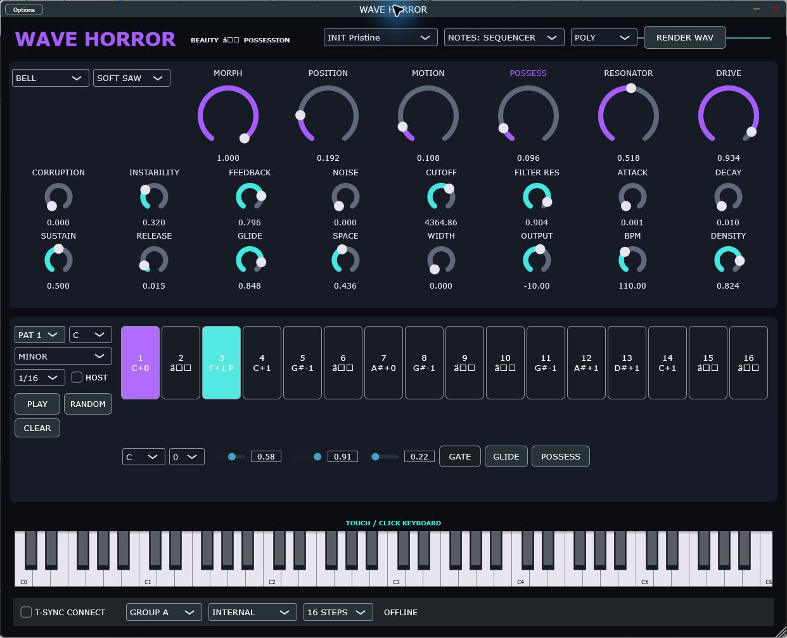

Private beta
T-SYNC Pack
Windows x64 · Three standalone apps
T-SYNC, DEADBEAT and WAVE HORROR together in one beta download.

Try it out
T-SYNC controls the timing while DEADBEAT makes drums and WAVE HORROR makes synth sounds. The two sound apps can also run independently.
Getting started
Extract the ZIP and read QUICK START.txt. Open all three apps. In DEADBEAT and WAVE HORROR, enable T-SYNC CONNECT, choose GROUP A and select T-SYNC clock mode. Use T-SYNC to start and stop the group.
The package includes beta notes explaining the Windows warnings for these unsigned test builds.
More screenshots




Tell me how it went.
Send the build name, your Windows version and what happened. Screenshots, recordings and things you made are welcome.
Send beta feedback ↗